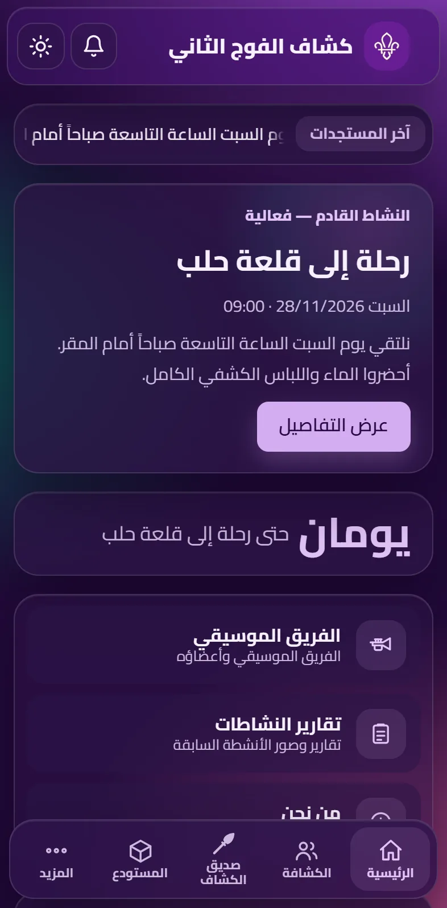
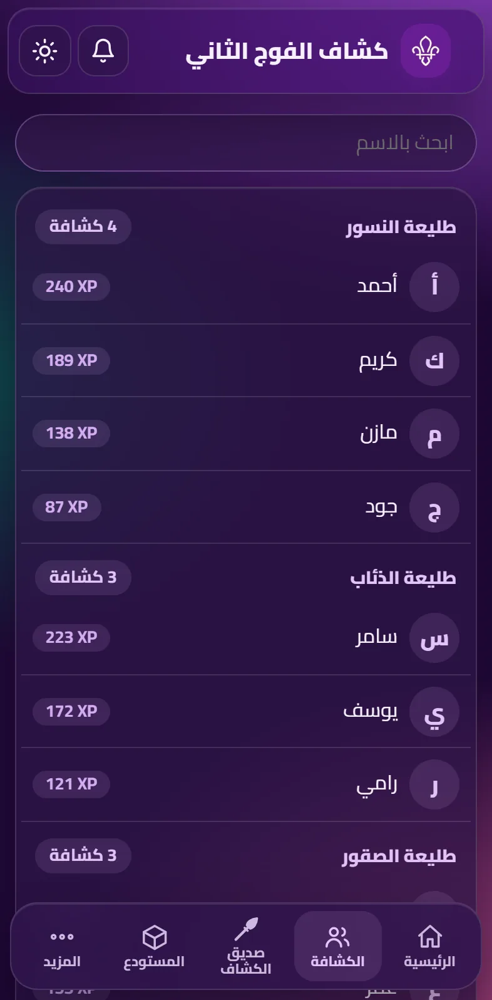

Featured project · Website and Android appالمشروع الرئيسي · موقع وتطبيق أندرويد
Scout Troop 2 appتطبيق الفوج الكشفي الثاني
A website and Android app for my scout troop. Troops book equipment from the shared depot through a booking system, leaders award XP points for activities, and a public page shows every scout's points and history. It is fully bilingual, and I built it end to end, from the database to the interface.موقع وتطبيق أندرويد للفوج الكشفي. فيه آلية حجوزات تحجز من خلالها الفرق معدّات المستودع المشترك، ويمنح القادة نقاط الخبرة على النشاطات، وتعرض صفحة عامة نقاط كل كشاف وسجلّه. يدعم العربية والإنجليزية بالكامل، وقد طوّرته بمفردي من قاعدة البيانات حتى واجهة المستخدم.
 HTML
HTML CSS
CSS JavaScript
JavaScript Node.js
Node.js- Express
- Render
 Android
Android


- Depot bookingsآلية الحجوزات Each troop books equipment from the shared depot with a basket. A booking goes through only if every item is free, items are put back when done, and it all works offline.تحجز كل فرقة معدّات المستودع المشترك عبر سلّة، ولا يُقبل الحجز إلا إذا توفّرت كل القطع، ثم تُعاد القطع عند الانتهاء، وكل ذلك يعمل حتى دون اتصال.
- XP pointsنقاط الخبرة Leaders award points with a note, and every scout's history is public.يمنح القادة النقاط مع ملاحظة، وسجلّ كل كشاف متاح للجميع.
- Roles and privacyالصلاحيات والخصوصية Six account roles; leaders see private details only for their own troop.ستة أنواع من الحسابات، ولا يطّلع القائد على البيانات الخاصة إلا لفرقته.
- Weekly reportsالتقارير الأسبوعية A report for each troop every Saturday, plus camps and trips with photo galleries.تقرير لكل فرقة كل سبت، إضافة إلى توثيق المخيمات والرحلات بالصور.
- Musical teamالفرقة الموسيقية Dedicated points, rehearsal attendance and a library of marches.نقاط مستقلة، وتسجيل حضور التدريبات، ومكتبة للمارشات.
- Notificationsالإشعارات Push notifications for new posts, and an Android app that prompts users to update.إشعارات فورية عند كل منشور جديد، وتطبيق أندرويد ينبّه المستخدم عند توفّر تحديث.